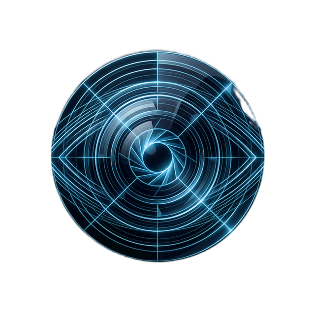

Clinical intelligence in the exam room. Visual autonomy in everyday life.
Built by eye care clinicians. Clinical exam scribe charting, automated patient recall, and Goz — the voice-guided visual companion patients use at home on smart glasses and mobile.
See Goz in Action
Explore how Goz guides patients in daily living with clear spoken cues, floor hazard alerts, and accurate medication label reading.
Safe Walking & Fall Prevention
Engineered for High-Volume Eye Clinics
Documentation that finishes before the patient stands up, automated recall that stops churn, and wearable visual guidance that works anywhere.
Clinical Exam Scribe & Lane Efficiency
Listens during the patient consultation. Generates verified optometric SOAP notes in real time.
"Eleanor, welcome back. How have your eyes felt with the latanoprost drops over the last two months?"
"The morning burning is gone, doctor. But when I step outside into the Lagos sun around midday, the glare is still blinding."
"Let's check your acuities. Reading chart shows 20/25 right, 20/20 left. Tonometry measures 16 mmHg right, 17 mmHg left—pressure is very well controlled. I'll maintain your drops, and prescribe amber contrast lenses for outdoor glare."
Automated SOAP & Findings
68yo female follow-up for POAG. Adherent to latanoprost 0.005% QHS. Morning discomfort resolved. Persistent outdoor glare/photophobia under midday sunlight.
1. POAG (ICD-10 H40.1112): Pressure controlled. Continue Latanoprost 0.005% 1 gtt OU QHS.
2. Photophobia (ICD-10 H53.149): Dispense UV400 amber contrast lenses. 3-month IOP review booked with WhatsApp reminder.
Paper Form Digitizer
Snap a photo of your clinic's familiar paper case sheet, refraction slip, or NOA / ODORBN intake card. Goz converts it into structured digital records matching your existing layout instantly.
Automated Patient Recall
Stops patient drop-off after cataract surgery, glaucoma pressure reviews, or annual diabetic retinopathy checks. Delivers direct WhatsApp and SMS reminders with 1-tap booking confirmations.
Dispensary & Reception POS
Sell frames, prescription lenses, and low-vision aids with instant card tap, cash entry, and direct bank payouts via Bachs. Includes printable waiting-room QR stands for quick checkout.
Wearable Guidance for Everyday Living
Runs directly on smart glasses and smartphones to keep patients confident and independent.
Elevation Drops & Thresholds
Detects unpainted floor threshold steps, curb drops, and floor level changes in 40ms, alerting macular degeneration and glaucoma patients through bone-conduction frames before a stumble.
Eye Drop Bottle Verification
Patients hold their medication bottle up to the frame or phone camera. Goz instantly announces the drug name, dosage eye, and schedule out loud to prevent wrong-bottle medication mix-ups.
Care Circle & Instant SOS
Keeps children, caregivers, and eye clinics informed. If a patient feels disoriented or needs help, a single long-press sends immediate GPS coordinates and live audio to designated contacts.
Calculate Your Clinic's Revenue & Time Recovered
Reclaim clinical charting hours across all comprehensive eye exams via the Clinical Exam Scribe, while recovering lost referrals and unlocking Remote Therapeutic Monitoring (RTM) billing for your low-vision patients.
Peer-Reviewed Evidence in Practice
Every GozVision feature answers a documented clinical failure mode in published literature—grounding clinic-wide exam documentation as well as specialized low-vision rehabilitation.
10.8 min
EHR Documentation Burden
Eye care clinicians spend an average of 10.8 minutes per encounter on EHR tasks—consuming over 3.7 hours daily and driving >50% optometric burnout. The Clinical Exam Scribe drafts compliant charts in real time across routine exams, anterior/posterior segments, and refractions.
64% → 55%
The Referral Hand-Off Leak
Only 64% of patients meeting low-vision criteria receive rehabilitation referrals from eye care providers, and barely 55% of those referred ever attend. The Low Vision Hub provides direct patient intake confirmation and automated closing-the-loop reminders.
29%
Early Device Abandonment
Nearly a third (29%) of patients prescribed assistive devices stop using them within 90 days. Continuous daily usage monitoring via GozVision alerts clinics to drop-offs early so care teams can proactively reach out and help.
2.2 Billion
Global Vision Impairment
At least 2.2 billion people live with vision impairment globally, with over 1 billion cases unaddressed or underserved. Goz provides spoken guidance, hazard detection, and reading assistance to turn periodic clinic visits into continuous everyday independence.
Goz Clinic Suite
Multi-tenant B2B practice management for optometrists. Clinical Exam Scribe workspace, Optical Dispensary & Storefront with Bachs instant payouts, Low Vision Hub, and Recall CRM.
Goz Patient App
The accessible mobile app for patients and caregivers. High-contrast tactile design, spoken scene narration, doctor prescriptions, and direct optical checkout.